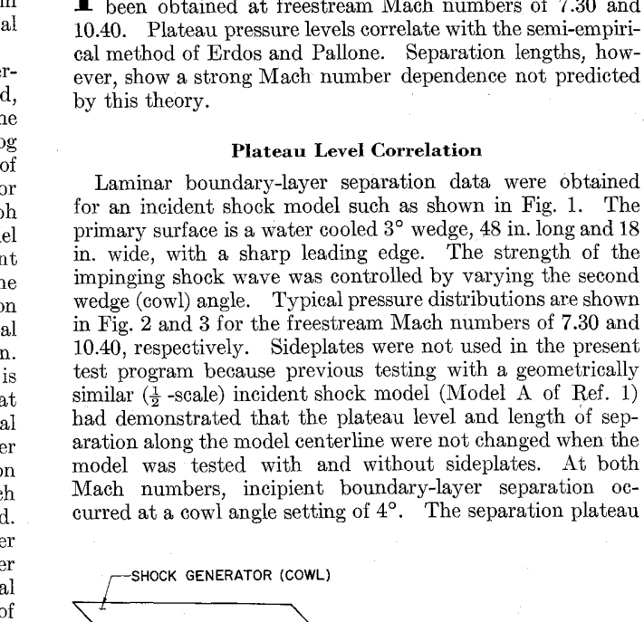
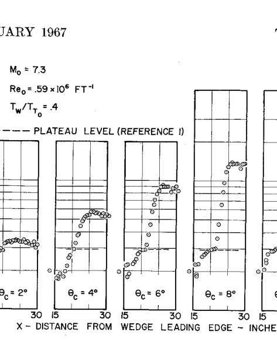
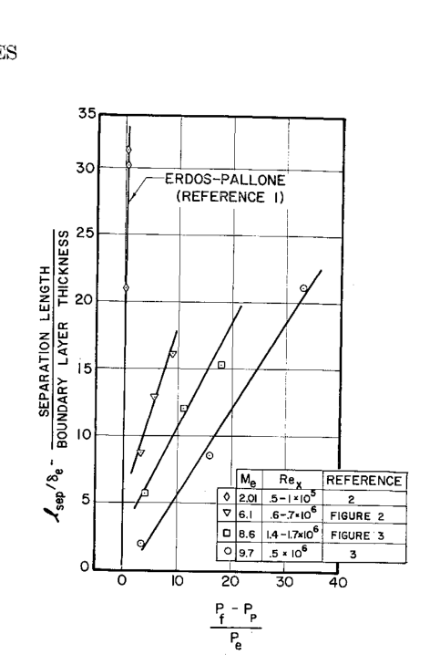
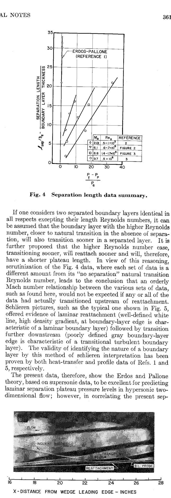

01中文摘要
在来流马赫数7.30和10.40下获得入射激波-边界层干扰的分离数据。试验模型为水冷3°楔，长48 in、宽18 in，前缘尖锐，用第二个楔（罩）角控制入射激波强度；两马赫数下起始分离均出现在罩角4°。分离平台压力与Erdos-Pallone半经验方法（基于绝热壁超声速流）符合很好，说明自由干扰模型具有普适性，且壁面摩阻足以表征传热影响。但分离长度呈现该理论未预测的强烈马赫数依赖；纹影显示再附为层流，转捩发生在更下游，因此不能用转捩提前解释该趋势。
02阅读说明
3 页 AIAA Journal 技术札记（1967, Vol.5 No.2, pp.360-362），实验研究。PDF 文本层混入相邻文章（第1页前半为电解槽模拟、第3页后半为 Langmuir 量热探针），本记录只取 Hoelmer 本文；已用 PDF 第2页核对平台压力公式与图2-图5。图2-图5可读，无表格；正文没有推导、没有测量不确定度或重复性数据，信息完整度对主要结论较高、对实验细节有限。 文章类型：期刊
03一句话核心与三句话摘要
冷壁高超声速斜激波-层流边界层干扰中，平台压力符合 Erdos–Pallone 式，但分离长度强烈依赖马赫数。
- 问题与缺口：高超声速二维斜激波-层流边界层干扰的分离平台压力和分离长度缺少同时覆盖 M∞7.30 与 10.40 的冷壁实验检验。 AI概括
- 方法与工况：在 NASA Ames 3.5-ft 高超声速风洞用 3° 水冷楔面与可调鸡尾角斜激波发生器，测量 M∞7.30（Re∞=0.59×10^6 ft^-1、Tw/Tt0=0.4）和 M∞10.40（Re∞=0.75×10^6 ft^-1、Tw/Tt0=0.3）的壁面压力并拍纹影。 AI概括
- 结论：分离平台压力与 Erdos–Pallone 半经验式很好吻合，但分离长度按 (Pf-Pp)/Pe 关联时呈强马赫数依赖，该理论不能预测。 原文明确
04核心内容清单
| 要点 | 类型 | 重要性 | 原文依据 | 属性 |
|---|---|---|---|---|
| 研究对象是入射斜激波与二维高超声速冷壁层流边界层的干扰，关注分离平台压力与分离长度。 | 研究目标 | A | p360 标题、摘要 | 原文明确 |
| 模型为水冷 3° 楔，长 48 in、宽 18 in、尖前缘；鸡尾角控制入射激波强度。 | 实验模型 | A | p360，图1 | 原文明确 |
| 未用侧板；此前几何相似（比例尺 OCR 不清） Model A 带/不带侧板试验表明中心线平台压力与分离长度不变。 | 实验设计 | B | p360 | 原文明确 |
| M∞7.30 与 10.40 下，起始边界层分离均发生在鸡尾角 4°。 | 关键现象 | A | p361；图2、图3 | 原文明确 |
| 分离平台压力与 Erdos–Pallone 半经验理论（基于绝热壁超声速流）很好吻合。 | 核心结果 | A | p361；图2、图3 虚线平台 | 原文明确 |
| 平台压力按 (Pp-Pe)/qe = 1.47 Cfe^1/2 (Me^2-1)^(-1/4) 计算。 | 定量关系 | A | p361 正文公式（未编号） | 原文明确 |
| 冷壁数据与基于绝热壁的理论一致，说明自由干扰模型普适、壁面摩阻足以表征传热影响。 | 机制推论 | A | p361 | 原文明确 |
| 分离长度按 (Pf-Pp)/Pe 关联时呈强马赫数依赖，文献3、4的数据也沿同一趋势。 | 核心结果 | A | p361；图4 | 原文明确 |
| 纹影显示再附为层流（边缘白色亮线、高密度梯度），转捩发生在其下游（灰色模糊边缘）。 | 流动显示 | B | p361；图5 | 原文明确 |
| 作者用“高 Re 更接近自然转捩→更早转捩→更早再附→更短平台”的推理检查转捩提前假说，认为图4的有序马赫数关系不支持该假说。 | 机制论证 | B | p361 | AI概括 |
| 最终主张：Erdos–Pallone 理论可很好预测高超声速二维层流分离的平台压力，却不能关联分离长度。 | 结论 | A | p361 | 原文明确 |
05引言：研究问题与领域缺口
文章研究入射斜激波与高超声速冷壁层流边界层相互作用后的分离平台压力和分离长度。缺口有两层：一是 Erdos–Pallone 半经验平台压力关系建立在绝热壁超声速数据上，需用冷壁高超声速数据检验其普适性；二是同一理论用于分离长度关联时是否仍成立尚不清楚。作者以 M∞=7.30 和 10.40 两组实验回答这两个问题，并在摘要中明确给出主张：平台压力与半经验方法相关，分离长度却表现出理论未预测的强马赫数依赖（p360）。
06流动条件与几何构型
| 项目 | 数值/描述 | 依据 | 备注 |
|---|---|---|---|
| 来流马赫数 M∞（工况1） | 7.30 | 图2，p361 | 图2标注 M0=7.3 |
| 单位雷诺数 Re∞（工况1） | 0.59×10^6 ft^-1 | 图2，p361 | 参考长度为英尺 |
| 壁温比 Tw/Tt0（工况1） | 0.4 | 图2、图5，p361 | 图5 图注写作 Tw/Ti0=0.4，OCR 如此；按上下文为总温比 |
| 来流马赫数 M∞（工况2） | 10.40 | 图3，p361 | 图3标注 M0=10.4 |
| 单位雷诺数 Re∞（工况2） | 0.75×10^6 ft^-1 | 图3，p361 | 参考长度为英尺 |
| 壁温比 Tw/Tt0（工况2） | 0.3 | 图3，p361 | 图3标注 Tw/TT=.3 |
| 鸡尾角 θc（M∞7.30） | 2°、4°、6°、8°、10° | 图2，p361 | 逐工况分别给出压力分布，不合并 |
| 鸡尾角 θc（M∞10.40） | 3°、4°、5°、8°、10° | 图3，p361 | 逐工况分别给出压力分布，不合并 |
| 起始分离鸡尾角 | 4°（两个马赫数均如此） | p361 | 原文明确 |
| 主楔几何 | 3° 楔角，长 48 in，宽 18 in，尖前缘 | p360 | 水冷 |
| 侧板 | 未使用 | p360 | 依据文献1 Model A 的带/不带侧板对比 |
| 流动维度 | 二维（中心线测量；无侧板） | p360-361 | 原文称 hypersonic two-dimensional flow |
| 风洞 | NASA Ames 3.5-ft Hypersonic Tunnel | p360 脚注 | 实验数据来源 |
| 边界层状态 | 层流（分离前及再附处） | 标题、p361 | 再附下游发生转捩 |
| 来流总温、总压、静温、静压 | 文中未提及 | 全文 | 仅给出 M∞、单位 Re 与壁温比 |
| 边界层厚度 δ、动量厚度 θ | 文中未提及 | 全文 | 分离长度按边界层厚度归一化（图4），但未给具体 δ |
| 来流湍流度/噪声 | 文中未提及 | 全文 | 风洞来流品质未给 |
| 攻角 | 文中未提及 | 全文 | 模型为 3° 楔，未给攻角 |
07核心现象与关键参数
| 参数 | 定义 | 数值 | 关系/说明 | 依据 |
|---|---|---|---|---|
| M∞ | 来流马赫数 | 7.30；10.40 | 两个独立工况 | 图2、图3，p361 |
| Re∞ | 单位长度雷诺数，参考长度 1 ft | 0.59×10^6 ft^-1；0.75×10^6 ft^-1 | 分别对应 M∞7.30 与 10.40 | 图2、图3，p361 |
| Tw/Tt0 | 壁温与来流总温之比（冷壁） | 0.4；0.3 | 分别对应 M∞7.30 与 10.40 | 图2、图3，p361 |
| θc | 第二楔（鸡尾）角度，控制入射激波强度 | 4° 为起始分离角（两个马赫数） | θc 增大→激波增强→分离 | p360-361 |
| (Pp-Pe)/qe | 平台压力相对分离前压力的无量纲压力升，qe 为动压 | 1.47 Cfe^1/2 (Me^2-1)^(-1/4) | Erdos–Pallone 半经验平台压力关系 | p361（未编号公式） |
| Cfe | 分离点上游边界层壁面摩阻系数 | 文中未给具体数值 | Cfe 越大，平台压力升越大（平方根关系） | p361 |
| Me | 边界层边缘马赫数 | 未给具体数值 | Me 越大，(Me^2-1)^(-1/4) 越小 | p361 |
| (Pf-Pp)/Pe | 分离长度关联所用的压力参数，Pf 为最终压力，Pp 为平台压力，Pe 为分离前压力 | 图4 横坐标，约 0-40 | 用于关联分离长度，但数据随 Mach 分层 | p361；图4 |
| Lsep/δ | 分离长度与边界层厚度之比 | 图4 纵坐标，约 0-35 | 随 (Pf-Pp)/Pe 增大而增大；不同 Mach 数据分层 | 图4，p361 |
| x | 距楔前缘的流向距离 | 图2、图3 横坐标约 15-30 in（图5 为 16-28 in） | 压力分布与分离位置的流向坐标 | 图2、图3、图5 |
| pw/p∞ | 壁面压力与来流静压之比 | 图2、图3 纵坐标，约 5-20 | 平台段近似水平 | 图2、图3 |
08方法与数据
实验在 NASA Ames 3.5-ft Hypersonic Tunnel 完成（p360 脚注）。模型为入射斜激波构型：主表面是水冷 3° 楔，长 48 in、宽 18 in、尖前缘；第二楔（鸡尾）角度控制入射激波强度（p360，图1）。未用侧板，依据是此前对几何相似的几何相似（比例尺 OCR 不清）入射激波模型（文献1的 Model A）带/不带侧板试验中，中心线平台压力和分离长度不变（p360）。测量包括沿楔面的压力分布和纹影；压力分布横坐标为距楔前缘距离（in），纵坐标为压力比。转捩/层流再附的纹影判读用文献1和5的热流与剖面数据校验（p361）。正文未给压力测点、采样、不确定度或重复性信息。
| 项目 | 内容 | 依据 | 备注 |
|---|---|---|---|
| 研究类型 | 实验研究（压力分布 + 纹影），与半经验理论对比 | p360-361 | 无本文自建理论推导 |
| 实验设备 | NASA Ames 3.5-ft Hypersonic Tunnel | p360 脚注 | 风洞来流品质未述 |
| 模型 | 水冷 3° 楔，48 in×18 in，尖前缘；第二楔（鸡尾）产生入射斜激波 | p360，图1 | 入射激波强度由鸡尾角控制 |
| 侧板处理 | 不用侧板；以文献1 Model A 的带/不带侧板对比为依据 | p360 | 中心线平台与分离长度不受影响 |
| 压力测量 | 沿楔面中心线测量压力分布，给出 pw/p∞ 随 x 的变化 | 图2、图3，p361 | 测点数量、传感器类型、采样率文中未提及 |
| 流动显示 | 纹影，用于判断再附层流与下游转捩 | 图5，p361 | 判读依据为边界层边缘亮线与灰度 |
| 纹影判读校验 | 用文献1和5的热流与边界层剖面数据证明纹影判读层流/湍流的有效性 | p361 | 不是本文独立校验 |
| 数据约化 | 读取平台压力；以 (Pf-Pp)/Pe 关联分离长度，并以边界层厚度归一化 | p361，图4 | 未给拟合方法或不确定度 |
| 理论对比 | Erdos–Pallone 半经验平台压力式；分离长度按同一压力参数关联 | p361 | 半经验式基于绝热壁超声速流 |
| 不确定度/重复性 | 文中未提及 | 全文 | 无法评估实验误差 |
| 转捩判据 | 纹影边界层边缘形态（亮线/灰色模糊） | p361 | 未给定量判据 |
| 试验气体 | 文中未提及 | 全文 | 未说明是否为空气 |
09核心推导与公式
原文未给出从守恒律出发的完整解析推导；以下仅列出材料中可核对的定义或建模链，不补写教科书推导。
本文是实验札记，没有从控制方程推导分离平台压力或分离长度；平台压力直接引用 Erdos–Pallone 半经验关系并与冷壁高超声速数据对比，分离长度则用压力参数做经验关联。
关键假设
- 半经验平台压力关系建立在绝热壁超声速流动基础上（p361）
- 作者主张壁面摩阻系数足以表征传热对平台压力的影响（p361）
- 所讨论的是二维高超声速流动（p361）
- 平台压力关系中的 Cfe 与 Me 取分离点上游/边界层边缘值（p361 符号说明）
推导过程
原文直接给出平台压力计算式，并说明 Pp 为平台压力、Pe 为分离前瞬间压力、qe 为动压、Cfe 为摩阻系数、Me 为边界层边缘马赫数。该式来自 Erdos–Pallone 的半经验理论，本文只用它和实验平台值对比，没有给出推导过程。
适用边界：该式是半经验引用而非推导结果，原文未给系数 1.47 的来源、适用马赫数范围或不确定度；数据仅两个马赫数、一个 3° 楔、冷壁、二维中心线；分离长度没有对应的理论式。
10结果：主要发现与关键证据
两组来流下起始边界层分离均出现在鸡尾角 4°（p361）。图2（M∞7.30）和图3（M∞10.40）给出不同鸡尾角（2°、4°、6°、8°、10° 与 3°、4°、5°、8°、10°）的壁面压力分布，虚线为文献1的平台压力。平台压力与 Erdos–Pallone 半经验式计算的平台值很好吻合（p361）。分离长度用压力参数 (Pf-Pp)/Pe 关联时，图4显示数据随马赫数明显分层；文献3、4的补充数据也沿同一趋势（p361）。纹影（图5）显示再附处为层流（边界层边缘白色亮线、高密度梯度），其下游才出现转捩/湍流特征（灰色模糊边缘）。
| 发现 | 证据 | 证据类型 | 强度 | 位置 | 属性 |
|---|---|---|---|---|---|
| 两个马赫数下起始边界层分离均出现在鸡尾角 4°。 | 图2、图3中 θc=2°/3° 尚无分离平台，θc=4° 出现平台；正文明确给出 4°。 | 实验现象 | 强 | p361；图2、图3 | 原文明确 |
| 分离平台压力与 Erdos–Pallone 半经验式很好吻合。 | 图2、图3 中实验平台与文献1虚线平台一致；正文称 excellent agreement。 | 理论-实验对比 | 强 | p361；图2、图3 | 原文明确 |
| 冷壁高超声速数据支持自由干扰模型的普适性，并表明壁面摩阻足以表征传热影响。 | 基于绝热壁超声速流的理论预测与 Tw/Tt0=0.4/0.3 的冷壁数据吻合。 | 机制推论 | 中 | p361 | 原文明确 |
| 分离长度按 (Pf-Pp)/Pe 关联时呈强马赫数依赖。 | 图4中不同 M∞ 的数据组明显分层；文献3、4数据沿同一趋势。 | 定量关联 | 强 | p361；图4 | 原文明确 |
| Erdos–Pallone 理论不能预测分离长度的马赫数依赖。 | 摘要明确称 separation lengths show a strong Mach number dependence not predicted by this theory；图4与正文重复该结论。 | 结论 | 强 | p360 摘要；p361 | 原文明确 |
| 纹影显示再附处为层流，转捩发生在再附下游。 | 图5再附近边界层边缘为白色亮线、高密度梯度；下游边缘变为灰色模糊。 | 流动显示 | 中 | p361；图5 | 原文明确 |
| 侧板对中心线平台压力和分离长度没有影响。 | 此前几何相似（比例尺 OCR 不清） Model A 带/不带侧板试验对比。 | 实验设计依据 | 中 | p360 | 原文明确 |
| 转捩提前到再附上游的假说不能解释图4的有序马赫数关系。 | 作者用各数据组距自然转捩雷诺数的远近进行推理，未发现转捩发生在再附上游的证据。 | 机制排除 | 弱 | p361 | AI概括 |
11机制解释与论证链
作者采用的机制框架是 Erdos–Pallone 的“自由干扰”模型：分离平台压力由当地边界层在入射激波逆压梯度下达到分离所需的压力升决定，并用 Cfe 与 Me 关联；冷壁数据与基于绝热壁的理论一致，说明壁面摩阻系数足以吸收传热影响（p361）。对分离长度，作者提出雷诺数—转捩—再附的推理链：相同条件下 Re 更高者更接近无分离自然转捩，因而在分离层中更早转捩、更早再附、平台更短；但图4各数据组距其自然转捩 Re 的远近不同，若转捩真的发生在再附上游，就不应出现图中有序的马赫数关系，故该机制不能解释观测到的分离长度 Mach 依赖（p361）。【AI概括；其中“不能解释”为作者明确判断】
12讨论：结论、贡献与局限
作者把平台压力吻合解释为 Erdos–Pallone 自由干扰模型具有普适性，并认为壁面摩阻系数足以表征传热（冷壁）对平台压力的影响（p361）。对分离长度的强马赫数依赖，作者先提出“高雷诺数更接近自然转捩、在分离层中更早转捩、更早再附、平台更短”的推理，再检查图4各数据组距其无分离自然转捩雷诺数的远近；结论是若部分数据已在再附上游转捩，就不应出现图中这样有序的马赫数关系，因此现有数据不支持该转捩提前机制（p361）。但作者没有给出替代的定量解释，分离长度的马赫数依赖仍是未解决问题。
作者结论
在 M∞=7.30 与 10.40、Tw/Tt0=0.4/0.3 的二维冷壁高超声速斜激波-层流边界层干扰中，起始分离鸡尾角均为 4°；分离平台压力与 Erdos–Pallone 半经验式很好吻合，说明自由干扰模型及以 Cfe 表征传热的做法可用于平台压力预估；但分离长度按 (Pf-Pp)/Pe 关联时呈强马赫数依赖，该理论不能预测（p360-361）。
主要贡献
- 提供 M∞7.30 与 10.40 两组冷壁高超声速斜激波-层流边界层干扰的壁面压力分布与纹影。
- 用冷壁数据检验 Erdos–Pallone 平台压力关系，支持其普适性。
- 指出分离长度关联存在理论未预测的强马赫数依赖，并给出图4数据汇总。
- 展示纹影判读层流再附/下游转捩的方法，并用文献热流与剖面数据佐证。
局限与未解决问题
仅两个马赫数、单一 3° 楔模型、冷壁、无侧板、中心线压力；未给测量不确定度、重复性或边界层剖面；平台压力公式为半经验引用，未给系数来源与适用范围；转捩判断依赖纹影和文献对比，不是本文独立测量；分离长度的马赫数依赖只被指出，未给出定量模型或完整机制。
13对高速流动与工程的意义
对高超声速进气道/隔离器设计，平台压力可用 Erdos–Pallone 式快速估算，且冷壁条件不破坏该 scaling；但分离长度不能只按压力参数缩放，必须考虑马赫数（以及 Re/转捩）影响，否则会低估或高估分离区尺度。纹影判读层流再附的方法可用于风洞快速诊断。【AI推断，基于原文结论】
14核心图件




15可引用原文素材
| 原文短句 | 可支持的观点 | 位置 | 使用建议 |
|---|---|---|---|
| “incipient boundary-layer separation occurred at a cowl angle setting of 4°” | 起始分离角在两个马赫数下均为 4° | p361 | 引用起始分离判据时使用 |
| “in excellent agreement with this cold wall hypersonic data” | 平台压力与 Erdos–Pallone 式吻合 | p361 | 支持半经验平台压力式的适用性 |
| “strong Mach number dependence not predicted by this theory” | 分离长度不被同一理论预测 | p360 摘要 | 指出理论缺口时使用 |
| “the skin friction is an adequate parameter to characterize the effects of heat transfer” | Cfe 可吸收冷壁传热影响 | p361 | 讨论冷壁平台压力 scaling 时使用 |
| “well-defined white line, high density gradient, at boundary-layer edge” | 纹影中再附处为层流 | p361 | 说明纹影判读依据 |
| “a strong Mach number dependence was exhibited by the data” | 图4分离长度数据的马赫数分层 | p361 | 引用图4结论时使用 |
16最终核验
| 核验项 | 结论 |
|---|---|
| 仅基于全文 | 是。只使用 bundle 全文、图注及 PDF 第2页核对公式/图2-图5；未引入外部文献或外部数据。 |
| A 级要点有依据 | 是。A 级要点均有页码、图号或公式支撑：起始分离 4°（p361）、平台压力吻合（p361/图2-3）、平台公式（p361）、分离长度 Mach 依赖（p361/图4）。 |
| 属性标注 | 是。原文明确、AI概括、AI推断逐条标注；纹影判读与转捩推理按原文与概括区分。 |
| 覆盖范围 | bundle 3 页全文读完；PDF 核对第2页；图1-图5均在清单中，选用图1、2、4、5。 |
| 无编造 | 是。未编造页码、图号、公式或数据；来流总温总压、δ/θ、湍流度、不确定度等缺失项均写“文中未提及”；图5 图注中的 Tw/Ti0 按 OCR 原样保留并注明。 |
需回原文确认
- 图4中各符号对应的具体 M∞、Re∞ 与数据来源需回原图/文献3、4核对。
- 平台压力公式的系数 1.47 与指数适用范围原文未给，需查 Erdos–Pallone 原文。
- 分离长度的强马赫数依赖是否有定量拟合式，本文未给出。
- 纹影判读的转捩位置是否与热流/剖面测量在同一工况下对应，本文未逐工况说明。
- 压力测点数量、采样与不确定度未报道，平台压力吻合的定量误差无法评估。
- 未用侧板的依据来自几何相似（比例尺 OCR 不清） Model A，是否完全适用于本模型尺度需回文献1核对。
17关联文献
依据标签、板块、构型与作者脉络自动关联，可据此追踪同一问题的前序与后续工作。
18引用格式
选择期刊风格后复制；出处保留原刊名。BibTeX 可直接用于 LaTeX。
引用格式
Hoelmer, W. 1967 Laminar boundary-layer separation in hypersonic flow. AIAA Journal. https://doi.org/10.2514/3.3977
PDF上传 PDF 并更新本页
本页缺少全文、摘要或图件时，可在浏览器本地补入 PDF。解析完全在本机完成，不上传网络；完成后会更新本页的 PDF 打开链接、原摘要、IMRaD 机器抽取、关键句与含图页面。复杂的公式语义与中文深度解读仍以原文和既有精读记录为准。